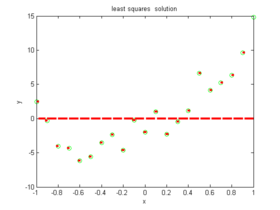
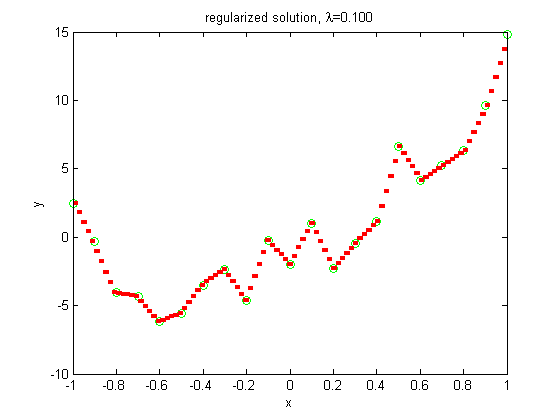
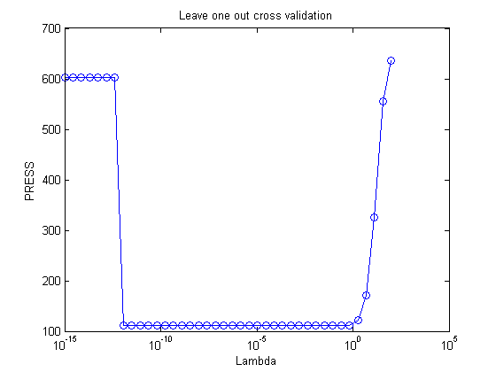

Demo of L2 regualrization of a piecewise constant function (splines) with fixed knots
Based on code by John D'Errico http://www.mathworks.com/matlabcentral/fileexchange/loadFile.do?objectId=8553&objectType=fileY
function ridgeSplineDemoCV() if 0 randn('state',0); rand('state', 0); n = 50; x = sort(rand(n,1)); y = sin(pi*x) + 0.2*randn(size(x)); lambdas = logspace(-1,2,20); lambdaOpt = 3; else [xtrain, ytrain] = makePolyData; x = rescaleData(xtrain); y = ytrain; %x = rescaleData(xtest); %y = ytest; lambdas = [logspace(-15,2,40)]; lambdaOpt = 3; end [X, knots] = splineBasis(x,100); % X(i,j) = 1 if x(i) is inside interval knot(j) d = size(X,2); warning off w = X\y; % least squares soln warning on %norm(w) %ww = pinv(full(X))*y; % least squares soln %norm(ww) figure; plot(x,y,'go'); hold on plot([knots(1:(end-1));knots(2:end)], repmat(w(1:(end-1))',2,1),'r-','linewidth',3) %axis([0 1 -.2 1.2]) title('least squares solution') xlabel 'x' ylabel 'y' % Now use L2 regularizer D = spdiags(ones(d-1,1)*[-1 1],[0 1],d-1,d); lambda = 1e-1; %lambda = 10; [n d] = size(X) wridge = ([X;lambda*D]\[y;zeros(d-1,1)]); % This time, no zero coefficients, and no rank problems. figure plot(x,y,'go'); hold on plot([knots(1:(end-1));knots(2:end)], repmat(wridge(1:(end-1))',2,1),'r-','linewidth',3) title(sprintf('regularized solution, %s=%5.3f', '\lambda', lambda)); xlabel 'x' ylabel 'y' % This least squares spline, with only a tiny amount of a bias, % looks quit reasonable. The trick is that the regularization % term is only significant for those knots where there is no data % at all to estimate the spline. The information for those spline % coefficients is provided entirely by the regularizer. % I'll show an example of ordinary cross validation (OCV) in % action for the same spline fit. First, we'll plot the prediction % error sums of squares (PRESS) as a function of lambda. nl = length(lambdas); if 0 % missing cv function? [n d] = size(X); K = n; % LOOCV for i=1:nl [trainErr, testErr] = cv(X, y, K, @ridgeQRSimple, lambdas(i)*D); meanErr(i) = mean(testErr); stdErr(i) = std(testErr)/sqrt(K); end figure errorbar(log10(lambdas), meanErr, stdErr, 'o-') xlabel('log10(\lambda)') ylabel('MSE') title('LOOCV') end press = zeros(1,nl); % loop over lambda values for the plot for i = 1:nl k = 1:n; % loop over data points, dropping each out in turn for j = 1:n % k_j is the list of data points, less the j'th point k_j = setdiff(k,j); % fit the reduced problem warning off spl_coef = ([X(k_j,:);lambdas(i)*D]\[y(k_j);zeros(d-1,1)]); %spl_coef = ([X(k_j,:);sqrt(lambdas(i))*D]\[y(k_j);zeros(d-1,1)]); warning on % prediction at the point dropped out pred_j = X(j,:)*spl_coef; % accumulate press for this lambda press(i) = press(i) + (pred_j - y(j)).^2; end end figure % plot, using a log axis for x semilogx(lambdas,press,'-o') title('Leave one out cross validation') xlabel 'Lambda' ylabel 'PRESS' % Note: there is a minimum in this function near lambda == 1, % although it is only a slight dip. We could now use fminbnd % to minimize PRESS(lambda). spl_coef_r = ([X;lambdaOpt*D]\[y;zeros(d-1,1)]); % This time, no zero coefficients, and no rank problems. figure plot(x,y,'go',[knots(1:(end-1));knots(2:end)], ... repmat(spl_coef_r(1:(end-1))',2,1),'r-','linewidth',3) title(sprintf('lambda = %5.3f', lambdaOpt)) xlabel 'x' ylabel 'y'
n =
21
d =
100
  